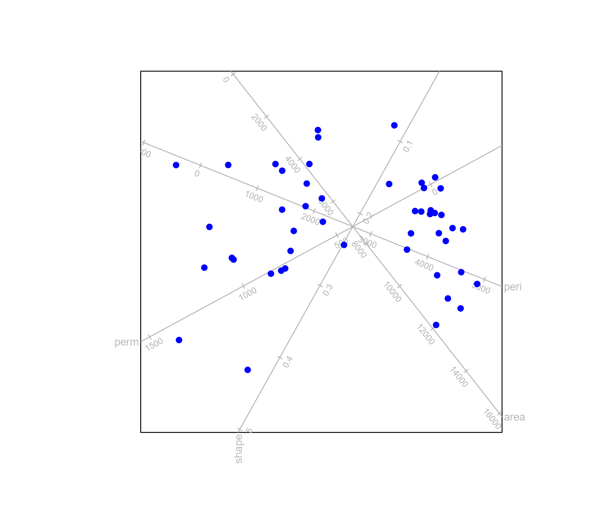
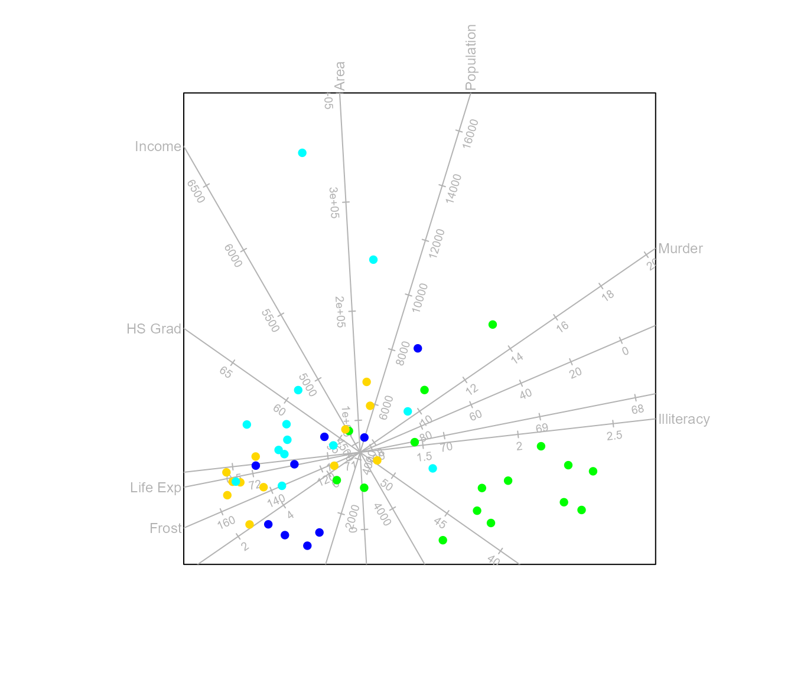
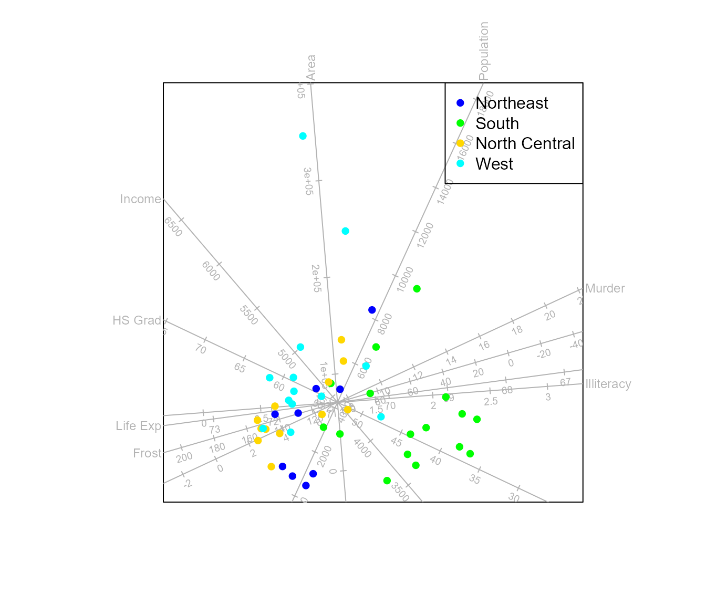
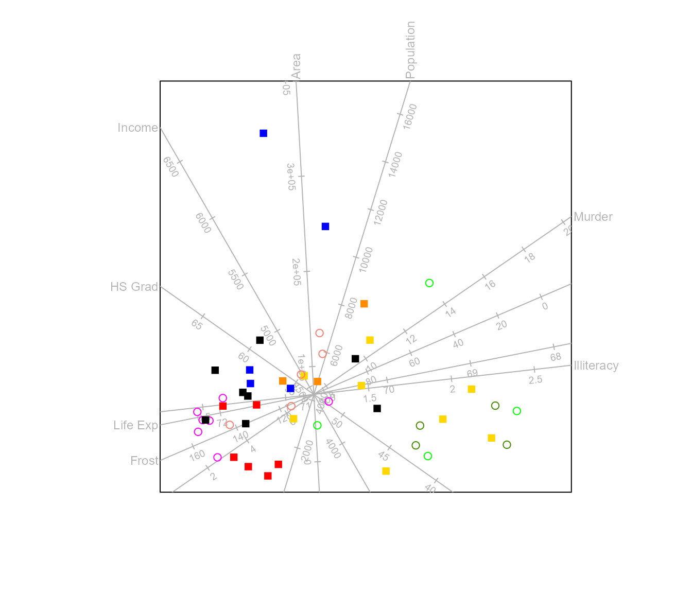
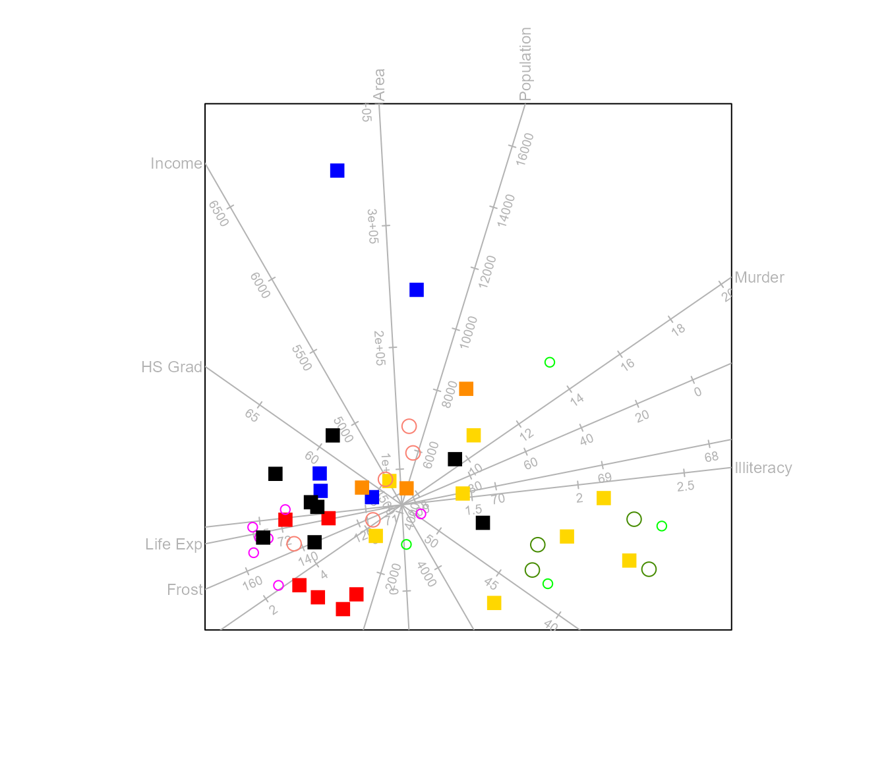
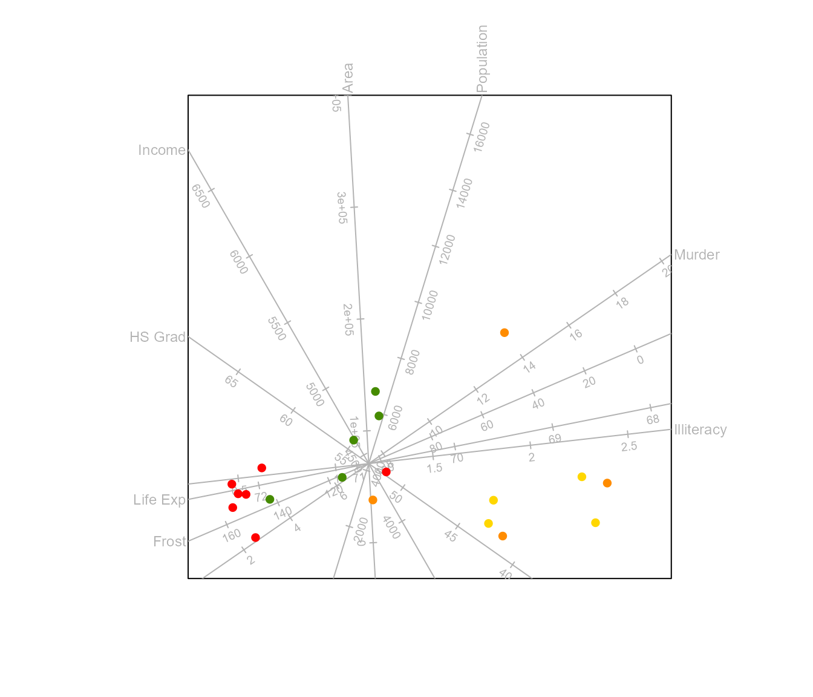
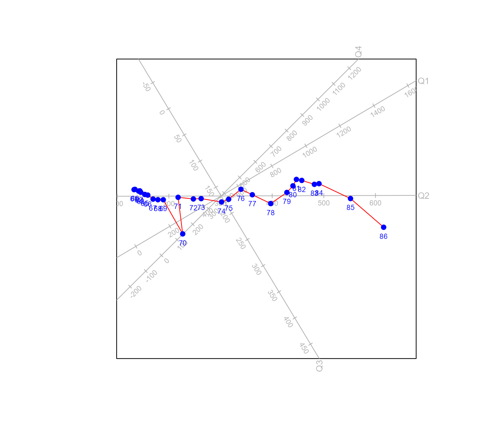
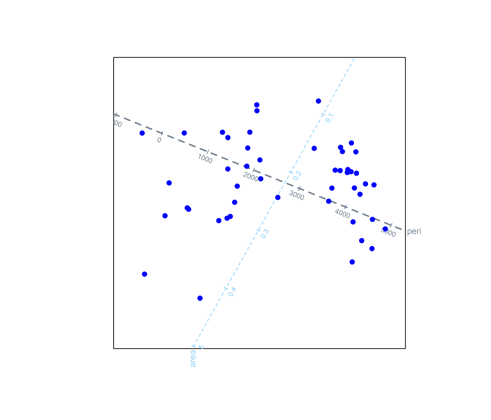
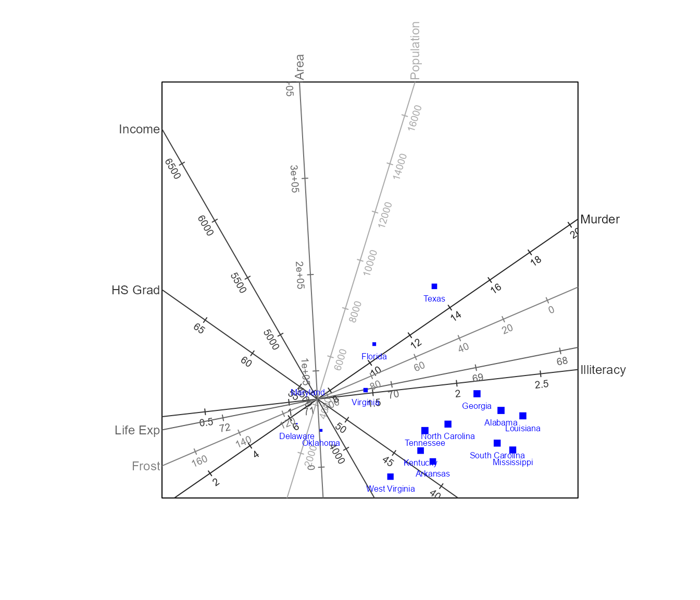

biplotEZ
biplotEZ.RmdThe package provides users with an EZ-to-use way of constructing multi-dimensional scatter plots of their data. The simplest form of a biplot is the principal component analysis (PCA) biplot which will be used for illustration in this vignette.
What is a PCA biplot
Consider a data matrix containing data on objects and variables. To produce a 2D biplot, we need to optimally approximate (typically of rank with ) with a rank matrix. In terms of the least squares error, we want to
where . It was shown by Eckart and Young (1936) that if the singular value decomposition of then with essentially selecting only the first two columns of , the diagonal matrix of the first (largest) two singular values and the first two rows of . Define then and we can write .
Gabriel (1971) shows that any rank matrix can be written as where and .The rows of provide the pairs of 2D coordinates representing the rows of and the rows of provide the pairs of 2D coordinates representing the columns of . Since , by setting and we obtains the best least squares approximation of . Gabriel (1971) further shows that the approximation of distances between the rows are optimal, while the approximation of correlations by the cosines between the angles of the rows of is sub-optimal.
The rows of is plotted as points, representing the samples. The rows of provide the directions of the axes for the variables. Since we have all the values that will predict for variable is of the form which defines a straight line orthogonal to in the biplot space (see the dotted red line in Figure 1(a)). To find the intersection of this prediction line with we note that where is the length of the orthogonal projection of on . This is illustrated in Figure 1(b) with triangle ABC: or The length of , written as is equal to the cosine times the length of , i.e. .
Figure 1: Calibration of biplot axes.
Since is along we can write and all points on the prediction line project on the same point . We solve for from
If we select ‘nice’ scale markers
for variable
,
then
and positions of these scale markers on
are given by
with
To obtain a PCA biplot of the
rock data in R we call

The function biplot()
The function biplot() takes a data set (usually) and
outputs an object of class biplot.
state.data <- data.frame (state.region, state.x77)
biplot(state.data)
#> Object of class biplot, based on 50 samples and 9 variables.
#> 8 numeric variables.
#> 1 categorical variable.Apart from specifying a data set, we can specify a single variable for classification purposes.
biplot(state.x77, classes=state.region)
#> Object of class biplot, based on 50 samples and 8 variables.
#> 8 numeric variables.
#> 4 classes: Northeast South North Central WestIf we want to use the variable state.region for
formatting, say colour coding the samples according to region, we
instead specify grouping.aes to indicate it pertains to the
aesthetics, rather than data structure. We can include or exclude the
aestethics variable from the data set.
biplot(state.x77, group.aes=state.region)
#> Object of class biplot, based on 50 samples and 8 variables.
#> 8 numeric variables.Next, we look at centring and scaling of the numeric data matrix. As
we saw in section 1 above, PCA is computed from the centred data matrix.
For most methods, centring is either required or has no effect on the
methodology, therefore the default is center = TRUE. Since
centring is usually assumed, you will get a warning message, should you
explicitly choose to set center = FALSE. The default for
scaled is FALSE, but often when variables are
in different units of measurement, it is advisable to divide each
variable by its standard deviation which is accomplished by setting
`scale = TRUE’.
biplot(state.data) # centred, but no scaling
#> Object of class biplot, based on 50 samples and 9 variables.
#> 8 numeric variables.
#> 1 categorical variable.
biplot(state.data, scale = TRUE) # centered and scaled
#> Object of class biplot, based on 50 samples and 9 variables.
#> 8 numeric variables.
#> 1 categorical variable.
biplot(state.data, center = FALSE) # no centring (usually not recommended) or scaling
#> Object of class biplot, based on 50 samples and 9 variables.
#> 8 numeric variables.
#> 1 categorical variable.The final optional argument to the function is specifying a title for
your plot. We notice in the output above, that centring and / or scaling
has no effect on the print method. It does however have an
effect on the components of the object of class biplot in
the output.
out <- biplot(state.data) # centred, but no scaling
out$center
#> [1] TRUE
out$scaled
#> [1] FALSE
out$means
#> Population Income Illiteracy Life.Exp Murder HS.Grad Frost
#> 4246.4200 4435.8000 1.1700 70.8786 7.3780 53.1080 104.4600
#> Area
#> 70735.8800
out$sd
#> [1] 1 1 1 1 1 1 1 1
out <- biplot(state.data, scale = TRUE) # centered and scaled
out$center
#> [1] TRUE
out$scaled
#> [1] TRUE
out$means
#> Population Income Illiteracy Life.Exp Murder HS.Grad Frost
#> 4246.4200 4435.8000 1.1700 70.8786 7.3780 53.1080 104.4600
#> Area
#> 70735.8800
out$sd
#> Population Income Illiteracy Life.Exp Murder HS.Grad
#> 4.464491e+03 6.144699e+02 6.095331e-01 1.342394e+00 3.691540e+00 8.076998e+00
#> Frost Area
#> 5.198085e+01 8.532730e+04
out <- biplot(state.data, center = FALSE) # no centring (usually not recommended) or scaling
out$center
#> [1] FALSE
out$scaled
#> [1] FALSE
out$means
#> [1] 0 0 0 0 0 0 0 0
out$sd
#> [1] 1 1 1 1 1 1 1 1Note that the components means and sd only
contain the sample means and sample sds when either/or
center and scaled is TRUE. For
values of FALSE, these components contain zeros for the
means and/or ones for the sd to ensure back
transformation will not have any affect.
Using biplot() with princomp() or
prcomp()
Should the user wish to construct a PCA biplot after performing
principal component analysis via the built in functions in the
stats package, the output from either of these functions
can be piped into the biplot function, where the piping implies that the
argument data now takes the value of an object of class
prcomp or princomp.
princomp(state.x77) |> biplot()
#> Object of class biplot, based on 50 samples and 8 variables.
#> 8 numeric variables.
out <- prcomp(state.x77, scale.=TRUE) |> biplot()
rbind (head(out$raw.X,3),tail(out$raw.X,3))
#> Population Income Illiteracy Life Exp Murder HS Grad Frost Area
#> Alabama 3615 3624 2.1 69.05 15.1 41.3 20 50708
#> Alaska 365 6315 1.5 69.31 11.3 66.7 152 566432
#> Arizona 2212 4530 1.8 70.55 7.8 58.1 15 113417
#> West Virginia 1799 3617 1.4 69.48 6.7 41.6 100 24070
#> Wisconsin 4589 4468 0.7 72.48 3.0 54.5 149 54464
#> Wyoming 376 4566 0.6 70.29 6.9 62.9 173 97203
rbind (head(out$X,3),tail(out$X,3))
#> Population Income Illiteracy Life Exp Murder
#> Alabama -0.14143156 -1.32113867 1.525758 -1.3621937 2.0918101
#> Alaska -0.86939802 3.05824562 0.541398 -1.1685098 1.0624293
#> Arizona -0.45568908 0.15330286 1.033578 -0.2447866 0.1143154
#> West Virginia -0.54819682 -1.33253061 0.377338 -1.0418703 -0.1836632
#> Wisconsin 0.07673438 0.05240289 -0.771082 1.1929438 -1.1859550
#> Wyoming -0.86693413 0.21188994 -0.935142 -0.4384705 -0.1294853
#> HS Grad Frost Area
#> Alabama -1.4619293 -1.62482920 -0.2347183
#> Alaska 1.6828035 0.91456761 5.8093497
#> Arizona 0.6180514 -1.72101848 0.5002047
#> West Virginia -1.4247868 -0.08580083 -0.5469045
#> Wisconsin 0.1723413 0.85685405 -0.1906996
#> Wyoming 1.2123316 1.31856256 0.3101835
out$center
#> [1] TRUE
out$scaled
#> [1] TRUE
out$means
#> Population Income Illiteracy Life Exp Murder HS Grad Frost
#> 4246.4200 4435.8000 1.1700 70.8786 7.3780 53.1080 104.4600
#> Area
#> 70735.8800
out$sd
#> Population Income Illiteracy Life Exp Murder HS Grad
#> 4.464491e+03 6.144699e+02 6.095331e-01 1.342394e+00 3.691540e+00 8.076998e+00
#> Frost Area
#> 5.198085e+01 8.532730e+04The functions PCA(), plot() and
legend.type()
The first argument to the function PCA() is an object of
class biplot, i.e. the output of the biplot()
function. By default we construct a 2D biplot (argument
dim.biplot = 2) of the first two principal components
(argument e.vects = 1:2). The group.aes
argument, if not specified in the function biplot(), allows
a grouping argument for the sample aesthetics. A PCA biplot of the
state.x77 data with colouring according to
state.region is obtained as follows:

The output of PCA() is an object of class
PCA which inherits from the class biplot. Four
additional components are present in the PCA object. The
matrix Z contains the coordinates of the sample points,
while the matrix Vr contains the “coordinates†for the
variables. In the notation of equation (1),
Z=
and
Vr=.
The component Xhat is the matrix
on the left hand side of equation (1). The final component
ax.one.unit contains as rows the expression in equation (2)
with
,
in other words, one unit in the positive direction of the biplot
axis.
By piping the PCA class object (inheriting from class
biplot) to the generic plot() function, the
plot.biplot() function constructs the biplot on the
graphical device. To add a legend to the biplot, we call
biplot(state.x77, scaled = TRUE) |>
PCA(group.aes = state.region) |>
legend.type(samples = TRUE) |> plot()It was mentioned in section 1 that the default choice
and
provides an exact representation of the distances between the rows of
which is an optimal approximation in the least squares sense of the
distances between the rows of
(samples). Alternatively, the correlations between the variables
(columns of
)
can be optimally approximated by the cosines of the angles between the
axes, leaving the approximation of the distances between the samples to
be suboptimal. In this case
and
and this biplot is obtained by setting the argument
correlation.biplot = TRUE.
biplot(state.x77, scaled = TRUE) |>
PCA(group.aes = state.region, correlation.biplot = TRUE) |>
legend.type(samples = TRUE) |> plot()
The function samples()
This function controls the aesthetics of the sample points in the
biplot. The function accepts as first argument an object of class
biplot where the aesthetics should be applied. Let us first
construct a PCA biplot of the state.x77 data with samples
coloured according to state.division.
biplot(state.x77, scaled = TRUE) |>
PCA(group.aes = state.division) |>
legend.type(samples = TRUE) |> plot()Since the legend interferes with the sample points, we choose to
place the legend on a new page, by setting new = TRUE in
the legend.type function. Furthermore, we wish to select
colours, other than the defaults, for the divisions. We can also change
the opacity of the sample colours with the argument opacity
that has default 1.
biplot(state.x77, scaled = TRUE) |>
PCA(group.aes = state.division) |>
samples (col = c("red", "darkorange", "gold", "chartreuse4",
"green", "salmon", "magenta", "#000000", "blue"),opacity = 0.65,pch=19) |>
legend.type(samples = TRUE, new = TRUE) |> plot()Furthermore we want to use a different plotting character for the central regions.
levels (state.division)
#> [1] "New England" "Middle Atlantic" "South Atlantic"
#> [4] "East South Central" "West South Central" "East North Central"
#> [7] "West North Central" "Mountain" "Pacific"We want to use pch = 15 for the first three and final
two divisions and pch = 1 for the remaining four
divisions.
biplot(state.x77, scaled = TRUE) |>
PCA(group.aes = state.division) |>
samples (col = c("red", "darkorange", "gold", "chartreuse4",
"green", "salmon", "magenta", "black", "blue"),
pch = c(15, 15, 15, 1, 1, 1, 1, 15, 15)) |>
legend.type(samples = TRUE, new = TRUE) |> plot()
To increase the size of the plotting characters of the eastern states, we add the following:
biplot(state.x77, scaled = TRUE) |>
PCA(group.aes = state.division) |>
samples (col = c("red", "darkorange", "gold", "chartreuse4",
"green", "salmon", "magenta", "black", "blue"),
pch = c(15, 15, 15, 1, 1, 1, 1, 15, 15),
cex = c(rep(1.5,4), c(1,1.5,1,1.5))) |>
legend.type(samples = TRUE, new = TRUE) |> plot()
If we choose to only show the samples for the central states, the
argument which is used either indicating the number(s) in
the sequence of levels (which = 4:7), or as shown below,
the levels themselves:
biplot(state.x77, scaled = TRUE) |>
PCA(group.aes = state.division) |>
samples (col = c("red", "darkorange", "gold", "chartreuse4",
"green", "salmon", "magenta", "black", "blue"),
which = c("West North Central", "West South Central", "East South Central",
"East North Central")) |>
legend.type(samples = TRUE, new = TRUE) |> plot()
Note that since four regions are selected, the colour (and other
aesthetics) is applied to these regions in the order they are specified
in which. To add the sample names, the label
argument is set to TRUE. For large sample sizes, this is
not recommended, as overplotting will render the plot unusable. The size
of the labels is controlled with label.cex which can be
specified either as a single value (for all samples) or a vector
indicating size values for each individual sample. The colour of the
labels defaults to the colour(s) of the samples. However, individual
label colours can be spesified with label.col, similar to
label.cex as either a single value of a vector of length
equal to the number of samples.
We can use the arguments label.cex,
label.side and label.offset to make the plot
more legible with a little effort.
rownames(state.x77)[match(c("Pennsylvania", "New Jersey", "Massachusetts",
"Minnesota"), rownames(state.x77))] <- c("PA", "NJ", "MA", "MN")
above <- match(c("Alaska", "California", "Texas", "New York", "Nevada", "Georgia", "Alabama",
"North Carolina", "Colorado", "Washington", "Illinois", "Michigan", "Arizon",
"Florida", "Ohio", "NJ", "Kansas"), rownames(state.x77))
right.side <- match(c("South Carolina", "Kentucky", "Rhode Island", "New Hampshire", "Virginia",
"Missouri", "Delaware", "Hawaii", "Oregon", "PA", "Nebraska", "Montana",
"Maryland", "Indiana", "Idaho"), rownames(state.x77))
left.side <- match(c("Wyoming", "Iowa", "MN", "Connecticut"), rownames(state.x77))
label.offset <- rep(0.3, nrow(state.x77))
label.offset[match(c("Colorado", "Kansas", "Idaho"), rownames(state.x77))] <- c(0.8, 0.5, 0.8)
label.side <- rep("bottom", nrow(state.x77))
label.side[above] <- "top"
label.side[right.side] <- "right"
label.side[left.side] <- "left"
biplot (state.x77, scaled=TRUE) |> PCA() |>
samples (label=TRUE, label.cex=0.6, label.side=label.side, label.offset=label.offset) |>
plot()We can also make use of the functionality of the ggrepel
package to place the labels.
biplot(state.x77, scaled = TRUE) |> PCA() |>
samples (label = "ggrepel") |> plot()
#> Warning: Use of `df$x` is discouraged.
#> ℹ Use `x` instead.
#> Warning: Use of `df$y` is discouraged.
#> ℹ Use `y` instead.
#> Warning: Use of `df$z` is discouraged.
#> ℹ Use `z` instead.
#> Warning: Use of `df$x` is discouraged.
#> ℹ Use `x` instead.
#> Warning: Use of `df$y` is discouraged.
#> ℹ Use `y` instead.
#> Warning: Use of `df$z` is discouraged.
#> ℹ Use `z` instead.
#> Warning: Use of `df$x` is discouraged.
#> ℹ Use `x` instead.
#> Warning: Use of `df$y` is discouraged.
#> ℹ Use `y` instead.
#> Warning: Use of `df$z` is discouraged.
#> ℹ Use `z` instead.
#> Warning: Use of `df$x` is discouraged.
#> ℹ Use `x` instead.
#> Warning: Use of `df$y` is discouraged.
#> ℹ Use `y` instead.
#> Warning: Use of `df$z` is discouraged.
#> ℹ Use `z` instead.
#> Warning: Use of `df$x` is discouraged.
#> ℹ Use `x` instead.
#> Warning: Use of `df$y` is discouraged.
#> ℹ Use `y` instead.
#> Warning: Use of `df$z` is discouraged.
#> ℹ Use `z` instead.
#> Warning: Use of `df$x` is discouraged.
#> ℹ Use `x` instead.
#> Warning: Use of `df$y` is discouraged.
#> ℹ Use `y` instead.
#> Warning: Use of `df$z` is discouraged.
#> ℹ Use `z` instead.Additionally, the user can add customised label names to the samples
in the biplot. To do this, label must be set to
TRUE (or "ggrepel") and
label.name is set to be a vector of size n
specifying the label names of the samples. In this case, the label name
is set to the first three characters of the state name (row names of the
data).
biplot(state.x77, scaled = TRUE) |> PCA() |>
samples (label = "TRUE",label.name=strtrim(row.names(state.x77),3)) |> plot()If the data plotted in the biplot is a multivariate time series, it
can make sense to connect the data points in order. Let us consider the
four quarters of the UKgas data set as four variables and
we represent the years as sample points in a PCA biplot.
gas.data <- matrix (UKgas, ncol=4, byrow=T)
colnames(gas.data) <- paste("Q", 1:4, sep="")
rownames(gas.data) <- 60:86
even.labels <- rep(c(TRUE, FALSE), 14)
biplot(gas.data, scaled = TRUE) |> PCA() |>
samples (connected = TRUE, connect.col="red", label = even.labels, label.cex=0.6) |>
plot()
The function means()
The function means() allow changing the aesthetics for
group means specified by group.aes, when the argument
show.class.means = TRUE in the call to the function
PCA(). The functionality of means() mirrors
that of samples() and is discussed in detail in the
vignette Class separation where class means are more prominent
than in PCA biplots.
The function axes()
Similar to the samples() function, this function allows
for changing the aestethics of the biplot axes. The first argument to
axes() is an object of class biplot. The
X.names argument is typically not specified by the user,
but is required for the function to allow specifying which axes to
display in the which argument, by either speficying the
column numbers
or the column names. The arguments col, lwd
and lty pertains to the axes themselves and can be
specified either as a scaler value (to be recycled) or a vector with
length equal to that of which.
To construct a PCA biplot of the rock data, displaying only the axes for peri and shape with different colours for the two axes, different line widths and line type 2, we need to following code:
biplot(rock, scaled = TRUE) |> PCA() |>
axes(which = c("shape","peri"),
col=c("lightskyblue","slategrey"),
lwd = c(1,2), lty=2) |>
plot()
The following four arguments deal with the axis labels. The argument
label.dir is based on the graphics parameter
las and allows for labels to be either orthogonal to the
axis direction (Orthog), horisontal (Hor) or
parallel to the plot Paral. The argument
label.line fulfills the role of the line
argument in mtext() to determine on which margin line (how
far from the plot) the label is placed while label.col and
label.cex is self-explanatory and defaults to the axis
colour and size 0.75. Note in for the illustration the in the code below
the colour vector has only three components, so that recycling is
applied.
biplot(rock, scaled = TRUE) |> PCA() |>
axes(col=c("lightskyblue","slategrey","blue"),
label.dir="Hor", label.line=c(0,0.5,1,1.5)) |>
plot()The function pretty() finds ‘nice’ tick marks where the
value specified in the argument ticks determine the
desired number of tick marks, although the observed number
could be different. The other tick.* arguments are similar
to their naming counterparts in par() or
text(). Since the tick labels are important to follow the
direction of increasing values of the axes, setting
tick.label = FALSE does not remove the tick marks
completely, but limits the labels to the smallest and largest value
visible in the plot. If the user would like to specify alternative names
for the axes, this can be done in the argument
ax.names.
The functions fit.measures() and
summary()
The print method provides a short summary of the biplot
object.
obj <- biplot(airquality)
#> Warning in biplot(airquality): 42 rows deleted due to missing values
obj
#> Object of class biplot, based on 111 samples and 6 variables.
#> 6 numeric variables.
#>
#> The following 42 sample-rows where removed due to missing values
#> 5 6 10 11 25 26 27 32 33 34 35 36 37 39 42 43 45 46 52 53 54 55 56 57 58 59 60 61 65 72 75 83 84 96 97 98 102 103 107 115 119 150The output from summary() will be very similar.
summary(obj)
#> Object of class biplot, based on 111 samples and 6 variables.
#> 6 numeric variables.
#>
#> The following 42 sample-rows were removed due to missing values
#> 5 6 10 11 25 26 27 32 33 34 35 36 37 39 42 43 45 46 52 53 54 55 56 57 58 59 60 61 65 72 75 83 84 96 97 98 102 103 107 115 119 150Additional information about the biplot object is added by the
fit.measures() function.
Quality of approximation
We start with the identity
which decomposes into a fitted part
and the residual part . The lack of fit is quantified by the quantity we are minimising
where we have the orthogonal decomposition
The overall quality of fit is therefore defined as
In biplotEZ the overall quality is displayed as a percentage:
Adequacy of representation of the variables
Researchers who construct the PCA biplot representing the columns with arrows (vectors) often fit the biplot with a unit circle. The rationale being that perfect representation of a variable will have unit length and the length of each arrow vs the distance to the unit circle represent the adequacy with which the variable is represented.
By fitting the biplot with calibrated axes, it is much easier to read off values for the variables, but the adequacy values can still be computed from
due to the orthogonality of the matrix .
Predictivities
The predictivity provides a measure of how well the original values are recovered from the biplot. An element that is well represented will have a predictivity close to one, indicating that the sample or variable values from prediction is close to the observed values. If an element is poorly represented, the predicted values will be very different from the original values and the predictivity value will be close to zero.
Sample predictivity
The predictivity for each of the samples is computed as the elementwise ratios
By calling the function
fit.measures() these quantities are computed for the
specific biplot object. The values are displayed with the
summary() function.
obj <- biplot(state.x77, scale = TRUE) |> PCA() |>
fit.measures() |> plot()
summary (obj)
#> Object of class biplot, based on 50 samples and 8 variables.
#> 8 numeric variables.
#>
#> Quality of fit in 2 dimension(s) = 65.4%
#> Adequacy of variables in 2 dimension(s):
#> Population Income Illiteracy Life Exp Murder HS Grad Frost
#> 0.1848016 0.3586383 0.2215201 0.1760908 0.2915819 0.2696184 0.1513317
#> Area
#> 0.3464170
#> Axis predictivity in 2 dimension(s):
#> Population Income Illiteracy Life Exp Murder HS Grad Frost
#> 0.3330216 0.7609185 0.7917091 0.6206172 0.8640485 0.7947530 0.4982299
#> Area
#> 0.5675169
#> Sample predictivity in 2 dimension(s):
#> Alabama Alaska Arizona Arkansas California
#> 0.95126856 0.61373919 0.26327256 0.86308539 0.57062754
#> Colorado Connecticut Delaware Florida Georgia
#> 0.83358779 0.59003002 0.18284712 0.49725356 0.94461052
#> Hawaii Idaho Illinois Indiana Iowa
#> 0.01984127 0.70337480 0.33405270 0.30082350 0.96367113
#> Kansas Kentucky Louisiana Maine Maryland
#> 0.86554676 0.87758262 0.93717163 0.66553856 0.06362508
#> MA Michigan MN Mississippi Missouri
#> 0.47386267 0.26050188 0.89207404 0.93073099 0.11321791
#> Montana Nebraska Nevada New Hampshire NJ
#> 0.44603781 0.93570441 0.22393876 0.87499561 0.15979033
#> New Mexico New York North Carolina North Dakota Ohio
#> 0.29304145 0.40609063 0.93004841 0.69011551 0.08810179
#> Oklahoma Oregon PA Rhode Island South Carolina
#> 0.37520943 0.36273523 0.02176080 0.58625617 0.93187284
#> South Dakota Tennessee Texas Utah Vermont
#> 0.83804787 0.96006357 0.73748654 0.66209083 0.80365601
#> Virginia Washington West Virginia Wisconsin Wyoming
#> 0.58564755 0.33877314 0.85231725 0.82519206 0.42499724If is not necessary to call the plot() function to
obtain the fit measures, but one of the biplot methods, such as
PCA() is required, since the measures differ depending on
which type of biplot is constructed. To suppress the output of some fit
measures, for instance if the interest is in the axis predictivity and
there are many samples which result in a very long output, these can be
set in the call to summary(). By default all measures are
set to TRUE.
obj <- biplot(state.x77, scale = TRUE) |> PCA() |>
fit.measures()
summary (obj, adequacy = FALSE, sample.predictivity = FALSE)
#> Object of class biplot, based on 50 samples and 8 variables.
#> 8 numeric variables.
#>
#> Quality of fit in 2 dimension(s) = 65.4%
#> Axis predictivity in 2 dimension(s):
#> Population Income Illiteracy Life Exp Murder HS Grad Frost
#> 0.3330216 0.7609185 0.7917091 0.6206172 0.8640485 0.7947530 0.4982299
#> Area
#> 0.5675169The axis predictivities and sample predictivities can be represented
in the biplot in two ways: setting either axis.predictivity
and / or sample.predictivity to TRUE, applies
shading for axes and shrinking for samples according to the predictivity
values.
biplot(state.x77, scale = TRUE) |> PCA(group.aes = state.region) |>
samples (which = "South", pch = 15, label = T, label.cex=0.5) |>
axes (col = "black") |>
fit.measures() |> plot (sample.predictivity = TRUE,
axis.predictivity = TRUE) 
Comparing the plot with the summary output it is clear
that the variables Population and Frost are not very well represented
and it can be expected that predictions on these variables will be less
accurate. Furthermore, the samples located close to the origin are not
as well represented as those located towards the bottom right. This is
typically the case where samples nearly orthogonal to the PCA plane are
projected close to the origin and due to their orthogonality, very
poorly represented.
Axes represented as vectors
If the user wishes to view the variables as arrows on the biplot to
give information on the adequacy of the variables, this can be done with
the axes() function, by setting vectors = TRUE
and unit.circle = TRUE. The adequacy value is given by
squared length of the arrow.
biplot(state.x77, scale = TRUE) |> PCA(group.aes = state.region) |>
axes (vectors = TRUE,unit.circle = TRUE) |>
fit.measures() |> plot ()